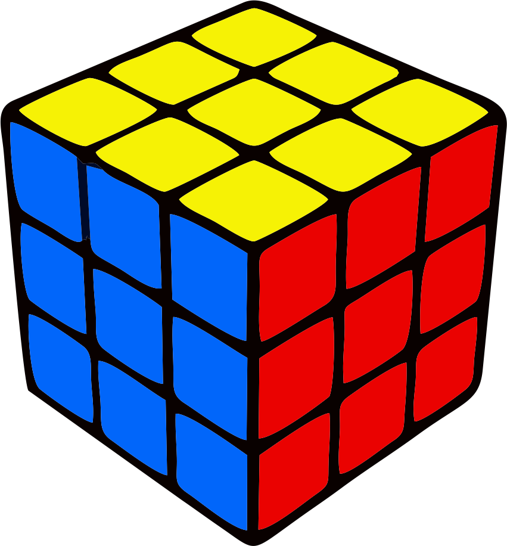
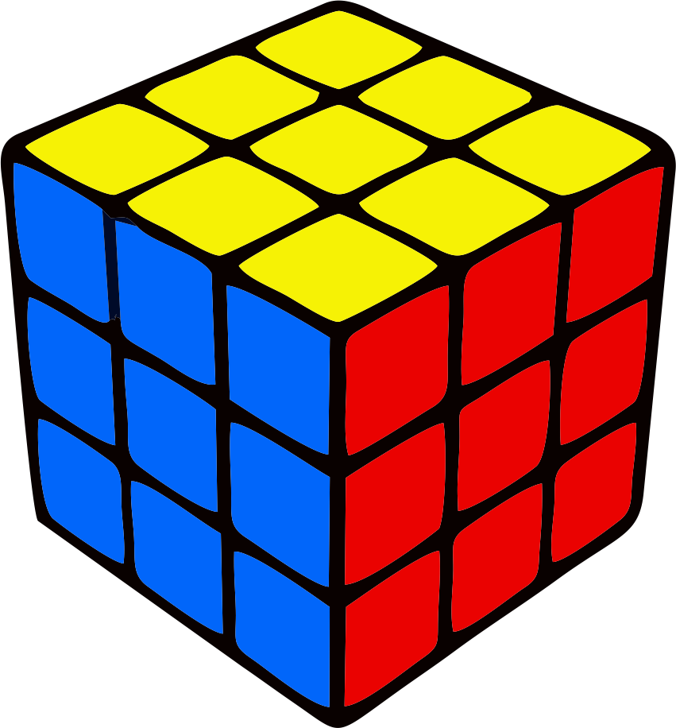

F2L
FL2 é uma sigla para "First Two Layers" (Primeiras Duas Camadas). Onde como o próprio nome sujere, iremos finalizar as duas primeiras camadas do cubo de uma vez só, reduzindo bastante o tempo em relação a montagem através do método básico de camadas. A seguir, está listado todos os casos possíveis de algoritimos para a resolução desta etapa:
 
